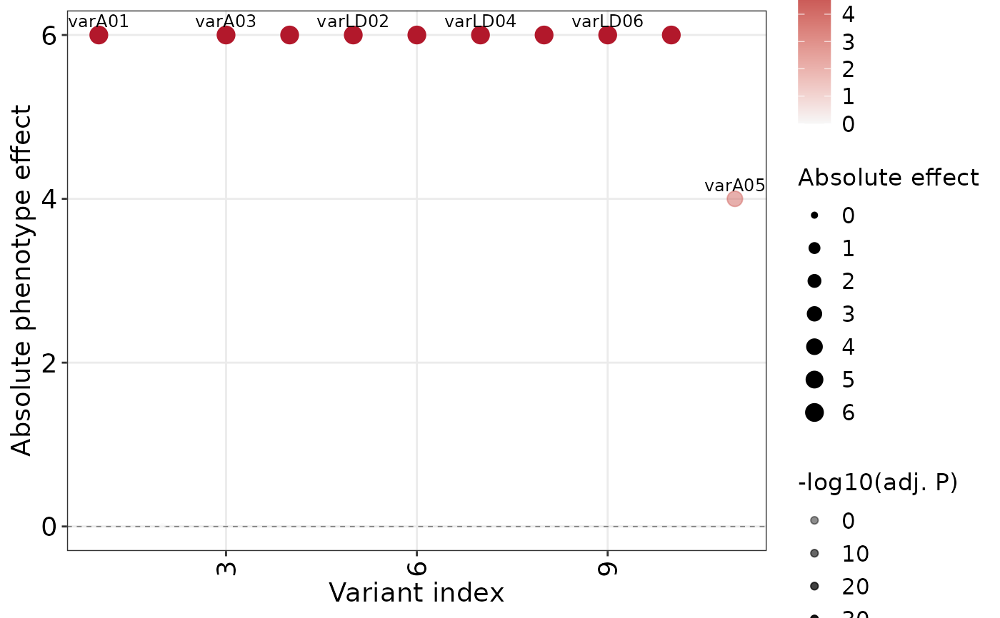

Plot phenotype effect size of each natural variant
Source:R/haplotype_refinement.R
plot_variant_effect.RdCalculate per-variant phenotype effect sizes from a HapVariant object and draw an ordered effect-size plot. For a two-genotype variant, the effect is the mean difference between the second and first genotype groups. For variants with more than two genotype groups, the effect is the maximum group mean minus the minimum group mean. Point color encodes the signed effect direction and magnitude, with blue for negative effects and red for positive effects.
Usage
plot_variant_effect(
hap,
phenotype,
traits = NULL,
sample_col = "sample_id",
min_group_samples = 2L,
test_method = c("t.test", "wilcox.test", "anova", "kruskal.test"),
p_adjust = "BH",
effect_type = c("absolute", "signed"),
top_n = 10L,
variant_label = c("variant_id", "pos"),
x_axis = c("index", "position"),
point_size = 2.2,
label_size = 3.2,
text_size = 14
)Arguments
- hap
A HapVariant object from
hap_variant().- phenotype
A phenotype table returned by
read_pheno()or a compatible data.frame.- traits
Numeric phenotype trait names. Integer and double storage modes are accepted and normalized before reshaping. If NULL, all numeric traits are used.
- sample_col
Sample column name in phenotype table.
- min_group_samples
Minimum sample number required for a genotype group.
- test_method
Significance test method. One of
t.test,wilcox.test,anova, orkruskal.test.- p_adjust
P-value adjustment method passed to
p.adjust().- effect_type
Which effect value is plotted. One of
absoluteorsigned.- top_n
Optional number of top variants to label by absolute effect size.
- variant_label
Column used for variant labels. One of
variant_id,pos, or an existing column inhap$variants.- x_axis
X-axis type. One of
indexorposition.- point_size
Point size.
- label_size
Text size for top-variant labels.
- text_size
Base text size.
Examples
vcf_file <- system.file("extdata", "gtr_demo_variants.vcf", package = "GeneTrackR")
pheno_file <- system.file("extdata", "gtr_demo_pheno.tsv", package = "GeneTrackR")
anno_file <- system.file("extdata", "gtr_demo.genePredExt", package = "GeneTrackR")
vcf <- read_vcf(vcf_file, mode = "memory", verbose = FALSE)
pheno <- read_pheno(pheno_file, verbose = FALSE)
anno <- read_genepred(anno_file, format = "genePredExt", verbose = FALSE)
hap <- hap_variant(vcf, annotation = anno, gene_id = "GeneA", genotype_mode = "code", min_variant_number = 1)
#> [GeneTrackR] Retrieved variants: 11.
plot_variant_effect(hap, phenotype = pheno, traits = "protein_content", min_group_samples = 3)
#> $figure

#>
#> $effect
#> variant_id trait group_n sample_n effect abs_effect low_group
#> <char> <char> <int> <int> <num> <num> <char>
#> 1: varA01 protein_content 2 36 6 6 0
#> 2: varA02 protein_content 2 36 0 0 0
#> 3: varA03 protein_content 2 36 6 6 0
#> 4: varLD01 protein_content 2 36 6 6 0
#> 5: varLD02 protein_content 2 36 6 6 0
#> 6: varLD03 protein_content 2 36 6 6 0
#> 7: varLD04 protein_content 2 36 6 6 0
#> 8: varLD05 protein_content 2 36 6 6 0
#> 9: varLD06 protein_content 2 36 6 6 0
#> 10: varA04 protein_content 2 36 6 6 0
#> 11: varA05 protein_content 2 36 4 4 0
#> high_group low_group_mean high_group_mean p_value test_method
#> <char> <num> <num> <num> <char>
#> 1: 1 38 44 2.008652e-37 t.test
#> 2: 1 41 41 1.000000e+00 t.test
#> 3: 1 38 44 2.008652e-37 t.test
#> 4: 1 38 44 2.008652e-37 t.test
#> 5: 1 38 44 2.008652e-37 t.test
#> 6: 1 38 44 2.008652e-37 t.test
#> 7: 1 38 44 2.008652e-37 t.test
#> 8: 1 38 44 2.008652e-37 t.test
#> 9: 1 38 44 2.008652e-37 t.test
#> 10: 1 38 44 2.008652e-37 t.test
#> 11: 1 40 44 1.190766e-07 t.test
#> group_summary p_adj variant_label chrom pos
#> <char> <num> <char> <char> <int>
#> 1: 0:n=18,mean=38;1:n=18,mean=44 2.455019e-37 varA01 chr1 12340250
#> 2: 0:n=18,mean=41;1:n=18,mean=41 1.000000e+00 varA02 chr1 12340600
#> 3: 0:n=18,mean=38;1:n=18,mean=44 2.455019e-37 varA03 chr1 12342550
#> 4: 0:n=18,mean=38;1:n=18,mean=44 2.455019e-37 varLD01 chr1 12342620
#> 5: 0:n=18,mean=38;1:n=18,mean=44 2.455019e-37 varLD02 chr1 12342710
#> 6: 0:n=18,mean=38;1:n=18,mean=44 2.455019e-37 varLD03 chr1 12342805
#> 7: 0:n=18,mean=38;1:n=18,mean=44 2.455019e-37 varLD04 chr1 12342920
#> 8: 0:n=18,mean=38;1:n=18,mean=44 2.455019e-37 varLD05 chr1 12343040
#> 9: 0:n=18,mean=38;1:n=18,mean=44 2.455019e-37 varLD06 chr1 12343180
#> 10: 0:n=18,mean=38;1:n=18,mean=44 2.455019e-37 varA04 chr1 12344500
#> 11: 0:n=27,mean=40;1:n=9,mean=44 1.309843e-07 varA05 chr1 12351050
#> variant_index plot_effect plot_log10_padj x_value
#> <int> <num> <num> <num>
#> 1: 1 6 36.609945 1
#> 2: 2 0 0.000000 2
#> 3: 3 6 36.609945 3
#> 4: 4 6 36.609945 4
#> 5: 5 6 36.609945 5
#> 6: 6 6 36.609945 6
#> 7: 7 6 36.609945 7
#> 8: 8 6 36.609945 8
#> 9: 9 6 36.609945 9
#> 10: 10 6 36.609945 10
#> 11: 11 4 6.882781 11
#>
#> $plot_data
#> trait variant_id genotype_group sample_id value
#> <char> <char> <char> <char> <num>
#> 1: protein_content varA01 0 S01 37.58
#> 2: protein_content varA02 0 S01 37.58
#> 3: protein_content varA03 0 S01 37.58
#> 4: protein_content varLD01 0 S01 37.58
#> 5: protein_content varLD02 0 S01 37.58
#> ---
#> 392: protein_content varLD04 1 S36 44.21
#> 393: protein_content varLD05 1 S36 44.21
#> 394: protein_content varLD06 1 S36 44.21
#> 395: protein_content varA04 1 S36 44.21
#> 396: protein_content varA05 1 S36 44.21
#>
#> attr(,"class")
#> [1] "GeneTrackRVariantEffectPlot" "list"